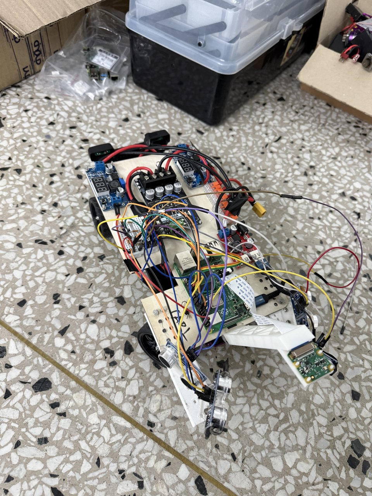

Work / ME209 Mechatronics System Design / 2025
Self-driving racing car
A Raspberry Pi car that drives itself to the starting grid by following a white line, waits for the lights, and then races — under a completely different controller. I did the build, mechanics to software. The interesting part is not either controller. It is the handoff between them.

The problem
The run has two halves that look like one task and are not. First the car has to find its way to the starting grid by following a white line painted on the floor — a vision problem, low speed, where the only thing that matters is staying on a stripe. Then the lights go green and it has to race a walled track as fast as it can without touching anything — a control problem, high speed, where the line is gone and the walls are what you have.
What I built
For the approach, a convolutional network trained in PyTorch takes the camera image and outputs a steering command directly. Line following is genuinely easier to learn than to specify: the classic approach is thresholding and centroid-finding, and it breaks on shadows, glare, tape joins and the moment the line leaves frame on a tight corner. A network trained on frames from the actual floor under the actual lighting handles all of that without me enumerating the cases.
I also built the vision that watches for the start signal, using OpenCV to detect the traffic light state and track signage — which is what triggers the transition from approach to race.
For the race itself, ultrasonic sensors measure distance to the walls and a PID controller steers to hold the car in the middle of the corridor. The error is the difference between the left and right readings; the controller drives that difference to zero.
Key technical decisions
Two controllers, because it is two problems. It is tempting to train one network to do the whole run. It would have been worse. A learned controller is the right tool when the rule is hard to write down and easy to demonstrate — which describes line following. A PID loop is the right tool when you have a clean scalar error signal and need a fast, predictable, tunable response — which describes wall centring at speed. Using a network for the racing half would have meant collecting training data at racing speed, and it would have been slower and less predictable than three gains.
Tuning is where the theory stops. The gains that behave on paper oscillate on carpet. Too much proportional gain and the car saws down the straight, hitting both walls in turn; too little and it clips the inside of every corner. Derivative gain damps the sawing but amplifies ultrasonic noise, and ultrasonic sensors are noisy — they return nothing at all off an angled wall, because the pulse reflects away instead of coming back. Handling a missing reading, rather than treating it as a distance of zero, mattered more than any of the gains.
What it taught me
This was the project that taught me to pick the tool for the sub-problem instead of for the project. A single approach applied uniformly is tidier to describe and worse to drive. It also gave me the first real instance of something that has been true on everything since: the sensor's failure mode, not its accuracy, is what you end up designing around.
Build
Photos & video